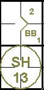
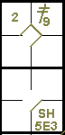
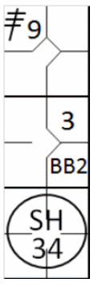
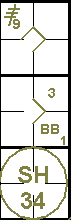
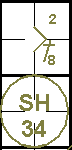
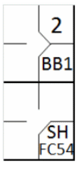
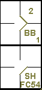
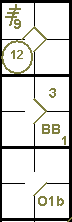
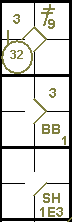

action { batter -> BB }
/* Le second batteur frappe un bunt , se fait retirer par le défenseur de la première base assisté par le lanceur, et fait avancer le coureur en une */
action { batter -> SH13 , runner1 -> + }

Conformément à la règle 9.08 de l'OBR:
Inscrire un amorti sacrifice lorsque, avant deux retraits, le batteur fait avancer un ou plusieurs coureurs avec un amorti et est retiré en première base ou aurait été retiré s’il n’y avait pas eu une erreur défensive, à moins que selon le jugement du scoreur officiel, le batteur n’exécute l’amorti pour réussir un coup sûr d’une base plutôt que pour faire avancer un ou plusieurs coureurs. Dans ce cas, attribuer une présence à la batte.
Commentaire: Pour déterminer si le batteur a sacrifié volontairement sa chance d'atteindre la première base pour permettre l'avance d'un coureur, le scoreur officiel devra accorder le bénéfice du doute au batteur. Le scoreur officiel devra prendre en considération les circonstances de cette présence à la batte, ce qui inclut la manche, le nombre de retraits et le score.
L'abréviation d'un sacrifice (bunt) est « SH » suivie du numéro du joueur de champ ayant participé à l'action. Un sacrifice (bunt) ne compte pas comme un passage au bâton.
Exemple 8: Le sacrifice (amorti) au lanceur permet au coureur d'avancer jusqu'en deuxième base.
| WBSC | Transcription dans l'outil de scorage | Outil |
|---|---|---|
|
|
/* Le premier batteur arrive sur base sur un 'base on ball' */ action { batter -> BB } /* Le second batteur frappe un bunt , se fait retirer par le défenseur de la première base assisté par le lanceur, et fait avancer le coureur en une */ action { batter -> SH13 , runner1 -> + } |
 |
Exemple 9:
Le sacrifice (amorti) en troisième base permet au coureur d'avancer de la deuxième à la troisième base. Une
erreur du défenseur de la première base permet au frappeur-coureur d'atteindre la première base en toute sécurité.
Comme vous pouvez le constater dans cet exemple, chaque avancée est notée avec le numéro de l'ordre de
passage au bâton du joueur qui a effectué le sacrifice.
| WBSC | Transcription dans l'outil de scorage | Outil |
|---|---|---|

|
/* Le premier batteur frappe un double dans le champ droit */ action { batter -> 2B9 } /* Le second batteur frappe un bunt vers le défenseur de la troisième base qui récupère la balle et la relaie au défenseur de la première base pour retirer le coureur batteur, mais le défenseur relâche la balle. Le coureur en deuxième base avance */ action { batter -> SH5E3 , runner2 -> + } |
 |
Le règlement stipule que, pour qu'un amorti soit validé, un ou plusieurs coureurs doivent avancer. Exemple 10: Même ici, un seul coureur a avancé, mais cela suffit pour transformer le coup en un amorti sacrifice (bunt)..
| WBSC | Transcription dans l'outil de scorage | Outil |
|---|---|---|
|
 |
/* Le premier batteur frappe un triple dans le champ droit */ action { batter -> 3B9 } /* Le second batteur arrive sur base sur un 'base on ball' */ action { batter -> BB } /* Le troisième batteur frappe un bunt vers le défenseur de la première base, qui récupère la balle et la renvoie au défenseur de la deuxième base pour retirer le batteur coureur. Le coureur en première base avance */ action { batter -> SH34 , runner1 -> + } |
 |
Très souvent, lors d'un sacrifice, le défenseur de la première base court vers l'avant pour récupérer la balle; dans ces exemples, c'est généralement le lanceur ou le défenseur de la deuxième base qui se porte volontaire pour couvrir la première base. Le scoreur doit veiller scrupuleusement à consigner l'action telle qu'elle s'est réellement déroulée. Exemple 11: Étant donné que le défenseur de la deuxième base s'est déplacé pour couvrir la première base et a reçu l'aide du joueur de première base.
| WBSC | Transcription dans l'outil de scorage | Outil |
|---|---|---|

|
/* Le premier batteur frape un hit dans le champ centre */ action { batter -> 1B8 } /* le batteur frappe un bunt sur le défenseur de la première base qui récupère la balle qui renvoie la balle au défenseur de la deuxième base pour retirer le batteur coureur. Le coureur avance */ action { batter -> SH34 , runner1 -> + } |
 |
Exemple 12: Un cas particulier de sacrifice (amorti) se produit lorsque la défense tente d'éliminer un coureur sans y parvenir, sans commettre d'erreur. Dans ce cas, le frappeur qui atteint le premier but doit bénéficier d'un sacrifice et d'un choix du défenseur.
| WBSC | Transcription dans l'outil de scorage | Outil |
|---|---|---|
|
 |
/* Le premier batteur atteint la première base sur un 'base on ball' */ action { batter -> BB } /* Le batteur frappe un bunt vers le défenseur de la troisième base qui récupère la balle et la relaie au défenseur de la deuxième base pour tenter sans succés de retirer le coureur */ action { batter -> SHFC54 , runner1 -> + } |
 |
ATTENTION: Lorsque, de l’avis du scoreur, ni le frappeur qui a frappé le sacrifice bunt, ni aucun des coureurs, n’auraient pu être éliminés par la défense avec un effort ordinaire, un coup sûr (bunt) doit être comptabilisé.
Aucun sacrifice (bunt) n'est accordé si le bunt entraîne l'élimination d'un coureur, même si un ou plusieurs coureurs sont en mesure d'avancer.
Exemple 13:
Le lanceur récupère la balle amortie, élimine le coureur qui tentait de passer de la troisième base au
marbre, tandis que le coureur en première base atteint la deuxième base en toute sécurité.
Il ne s'agit pas d'un amorti (sacrifice) et le frappeur est crédité d'un passage au bâton. Ajoutez un B majuscule pour
indiquer qu'il s'agit d'un amorti.
| WBSC | Transcription dans l'outil de scorage | Outil |
|---|---|---|

|
/* Le premier batteur frappe un triple en champ droit */ action { batter -> 3B9 } /* Le deuxième batteur arrive sur base sur un 'base on ball' */ action { batter -> BB } /* Le premier batteur frappe un bunt sur le lanceur qui récupère la balle et fait le choix de relayer cette balle au receveur pour retirer le coureur qui était en troisième base */ action { batter -> O1b , runner1 -> O1 , runner3 -> 12 } |
 |
EXCEPTION: Si un coureur est éliminé en tentant d'atteindre la base après celle qu'il a atteinte sur le coup sacrifice (amorti), le frappeur se voit également accorder un coup sacrifice (amorti).
Exemple 14:
Le coureur en deuxième base, après avoir atteint la troisième, continue vers le marbre pour tenter de
profiter de l'erreur du frappeur-coureur, mais il est éliminé par le receveur avec l'aide du défenseur de la
première base.
NOTE: Il arrive qu'un frappeur tente de frapper la balle avec l'intention d'obtenir un coup sûr, mais
ne la touche que faiblement. Dans ce cas, il ne doit pas se voir accorder un amorti, même si un ou plusieurs
coureurs avancent, car ce n'était pas son intention. L'action est comptabilisée comme un retrait normal au
premier but.
| WBSC | Transcription dans l'outil de scorage | Outil |
|---|---|---|

|
/* Le premier batteur frappe un double dans le champ droit */ action { batter -> 2B9 } /* Le deuxième batteur arrive sur base sur un 'base on ball' */ action { batter -> BB } /* Le batteur frappe un bunt sur le lanceur qui renvoie la balle au défenseur de la première base. Le défenseur relâche la balle, et le batteur coureur arrive safe. il récupère à temps la balle pour la renvoyer au receveur qui retire le coureur arrivant de la deuxième base */ action { batter -> SH1E3 , runner1 -> + , runner3 -> + 32 } |
 |